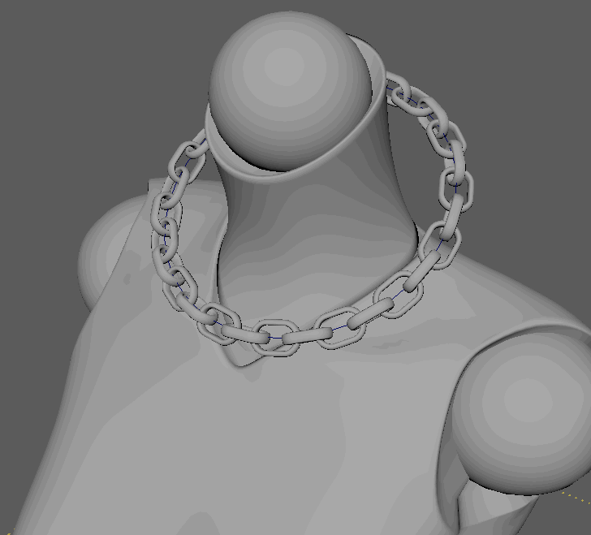
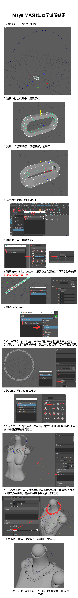
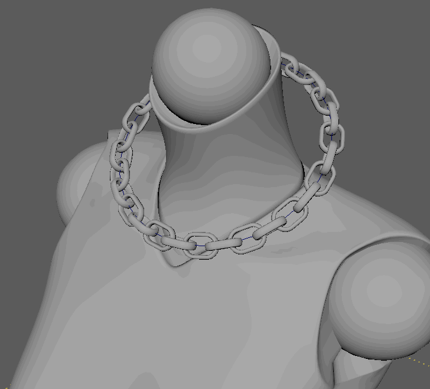
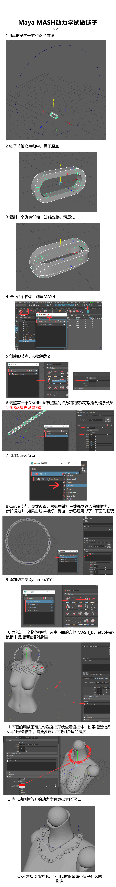

MayaMASH动力学做链子




因为疫情严重不得不在家办公，无奈TeamViewer很多软件打开都是白屏，稳定性也很是不爽，所以结合现有资源做了个内网穿透，将公司的电脑远程登陆地址映射到公网上，在家用windows自带的远程桌面连接，实测效果比TeamViewer好得多。
之前配NAS的时候，家里整过光猫，改成路由拨号所以有公网ip，也在nas上运行了ddns程序，另外这台群晖nas不出意外会一直开机（因为跑了文件存储和日记服务），这样一来就有现成的条件做内网穿透服务器了，搞起来~

登录DSM（群晖的网页系统，很nb），开启SSH
默认是22端口

在路由上设置转发

win+R输入cmd打开终端
1 | ssh 群晖登录账号@winotmk.***.net |
输入密码回车登录。因为配了ddns直接输域名就好
1 | sudo -i //root权限，注意是由$变为# |
用root登录
1 | cd /etc/ssh |
1 | vim /etc/ssh/sshd_config |
修改config文件，输入 i 编辑
将#PermitRootLogin prohibit password
修改为：PermitRootLogin yes
去掉#号
之后多按几下ESC 退出编辑模式，再输入 :wq 回车保存
1 | synouser --setpw root xxxxxxx |
修改root密码，xxxx换成自己的
1 | reboot //重启群晖 |
现在可以直接用root登录ssh了
用这个是因为我对linux指令不熟，图形界面很友好，可以本地制作好文件以后再上传运行，非常简单
和ssh一样输入好地址就能连接用了，注意协议选SCP，第一次选的是SFTP，神奇的是也连上了，但是出现的是NAS的硬盘盘符而不是linux内部的路径，在这里懵了很久
github地址：
https://github.com/fatedier/frp/releases
家里的双盘位群晖是arm的cpu所以选了frp_0.31.2_linux_arm.tar.gz
直接下载下来，解压，编辑frps.ini
1 | [common] |
加了三行是打开了网页后台界面，可以康康frp的运行情况
当然，路由上也要给7000和7500添加端口转发
登录winscp
根目录下创建frp文件夹
（其实只用把frps相关的复制过去就好）

右键属性，给0755权限

打开终端，cd到/frp目录下
然后执行
1 | ./frps -c ./frps.ini |
出现巴拉巴拉success就是成功了
但是不能关闭终端，否则程序会关闭。一般来说我们是需要后台一直运行着的，所以我们使用nohup命令让其后台执行。
1 | nohup ./frps -c frps.ini |
ps:linux退出当前程序是ctrl+c或者q
新增用户自定义脚本

如下图设置

设置脚本
1 | /frp/frps -c /frp/frps.ini |

勾选保存

至此服务端的部分设置完成，可以通过http://****.net:7500/访问看见界面

##客户端配置
下载frp_0.31.2_windows_386.zipwindows版本
解压修改frpc.ini
1 | [common] |
保存关闭，新建一个start.bat批处理，
写上
1 | frpc.exe -c frpc.ini |

保存运行就能启动客户端了

当然还有一个问题，那就是我们同样无法关闭dos命令框，如果关闭frp也同时被关闭了，所以我们需要同样需要后台执行，所以我找到了一种办法，可以使其后台运行。编写一个vbs脚本
（这个方法我没试，出处
ok折腾完了，现在直接点开公司电脑的此电脑右键属性，按下图设置，添加可以访问的用户
在自己电脑打开远程桌面，就可以连接了

github：https://github.com/winotmk/winotmk.github.io
总有一些零碎的想法，需要记录下来，写全面的文章没有时间，不写下来又会忘，日记app又不方便整理，同时也想利用一下树莓派，网上搜索便发现hexo+github部署的方式，于是想尝试尝试，一路遇到很多问题
主要参考：基于树莓派搭建Hexo博客部署到GitHub/Gitee
前期第二参考：hexo——轻量、简易、高逼格的博客
更详细的安装过程：GitHub+Hexo 搭建个人网站详细教程
hexo官方文档：https://hexo.io/docs/
hexo博客文档（似乎和上面有不少内容重叠）：https://theme-next.js.org/docs/
下载armv7版本的node.js：nodejs下载
git key配置：github每次需要输入密码和用户名的问题…
取消使用key令牌后还要输入密码：取消 SSH 私钥密码
官方文档：https://hexo.io/zh-cn/docs/configuration
Next主题github：https://github.com/next-theme/hexo-theme-next
Next主题的文档(ps.页面样式好看可参考)：第三方服务集成
Next主题代码框高亮预览设置：https://theme-next.js.org/highlight/
https://hexo.io/docs/asset-folders
DevOps 访客数统计 & google analytics 数据分析
将文章视图添加到您的 Hexo 博客(有LeanCloud和Firebase比较分析）
hexo next主题的leancloud安全插件github：https://github.com/theme-nex…
上面链接的说明：Leancloud访客统计插件重大安全漏洞修复指南
Firebase:https://console.firebase.google…
畅言：https://changyan.kuaizhan.com/v3/changyan/overview
本来都是用putty打指令，用WinSCP访问我的目录操作的，但是WinSCP自带的文本编辑过与拉跨，有几次多打空格没看出来导致直接hexo g失败，后来突发奇想为啥不找个轻量级的IDE直接去写这些呢，于是用起了vscode
不过自己测试发现不好用，于是用了SSH FS这个vscode插件
Welcome to Hexo! This is your very first post. Check documentation for more info. If you get any problems when using Hexo, you can find the answer in troubleshooting or you can ask me on GitHub.
1 | $ hexo new "My New Post" |
More info: Writing
1 | $ hexo server |
More info: Server
1 | $ hexo generate |
More info: Generating
1 | $ hexo deploy |
More info: Deployment